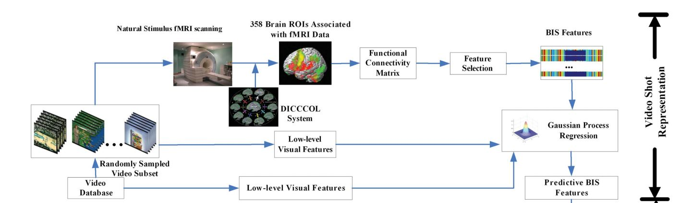
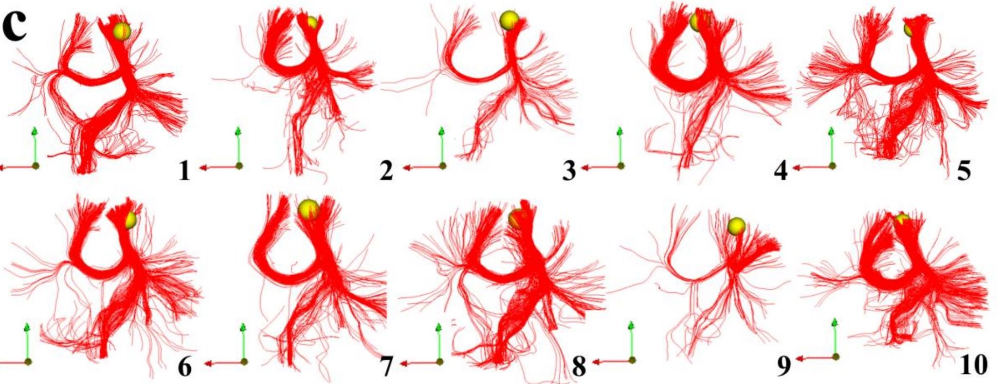
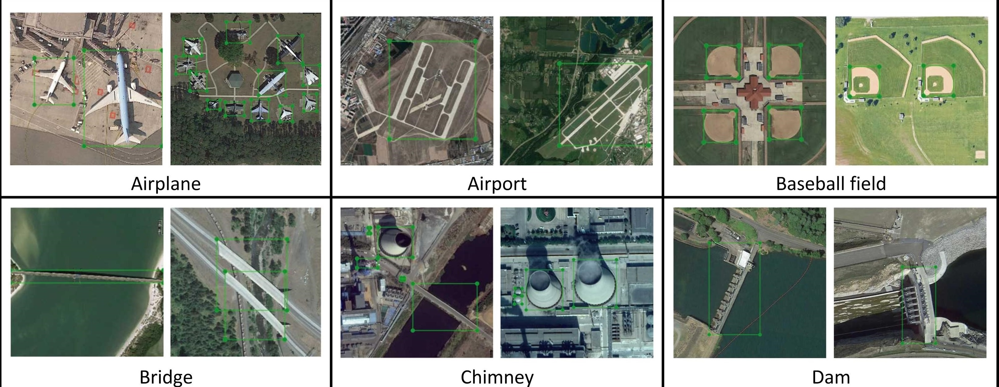
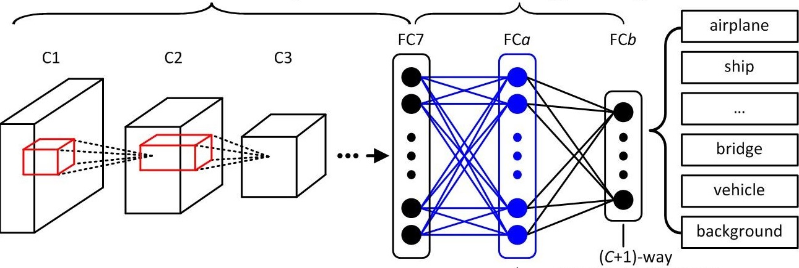
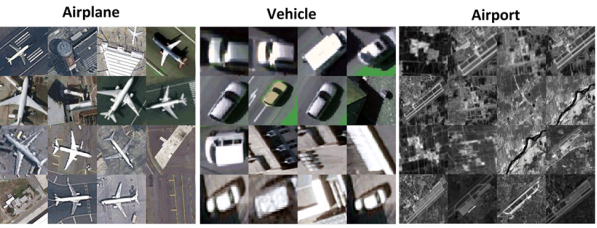
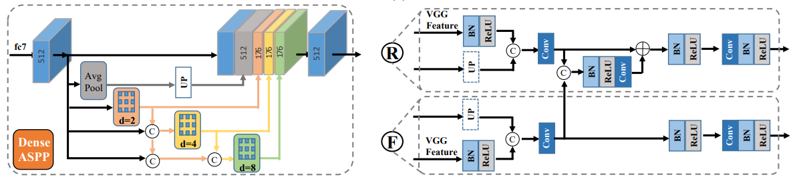
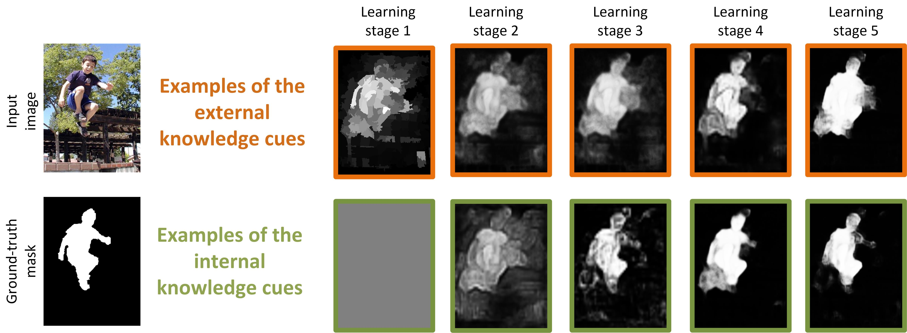
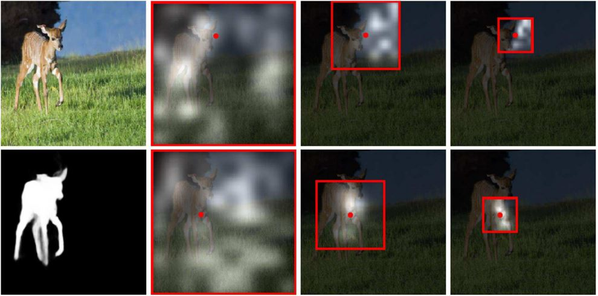

The Brain and Artificial Intelligence Laboratory (BRAIN Lab) is affiliated to the Key Laboratory of Information Fusion Technology under the Ministry of Education. The team targets at the cutting-edge research in the filed of archifical intelligence and closely focuses on the country's strategic needs. We carry out the theoretical research, key technology breakthroughs, and system integration verification in the fields of intelligent remote sensing information processing, brain cognition and intelligent computing, visual intelligent perception and intelligent processing, etc. By providing new ideas, new methods and new technologies for the development of artificial intelligence, our team has been one of the important bases for the cultivation of high-level talents and high-level scientific research in the field of artificial intelligence in China. Graduates are mainly employed by domestic high-tech companies and domestic research institutes such as Baidu, Alibaba, Tencent, Shangtang Technology, Hikvision, Didi, etc.

| Staff | Introduction | Staff | Introduction |
|---|---|---|---|
 |
Junwei Han is currently a Professor in Northwestern Polytechinical University. His research interests include computer vision, pattern recognition, and artifical intelligence. He has published more than 100 papers in top journals and conferences such as Proceedings of the IEEE, TPAMI, CVPR, MICCAI, and so on. He is an Associate Editor of IEEE Trans. on Neural Networks and Learning Systems, IEEE Trans. on Multimedia, IEEE Trans. on Circuits and Systems for Video Technology, and IEEE Trans. on Cybernetics. He also serves CVPR, ICPR, and ACCV as an area chair. Email: junweihan2010@gmail.com | Gong Cheng is currently a Professor with Northwestern Polytechnical University, Xi’an, China. He has published more than 30 papers in top journals and top conferences including Proceedings of the IEEE, IEEE TPAMI, IEEE TIP, CVPR, and so on. 19 of his papers have been recognized as ESI highly cited papers and 11 of them have been recognized as ESI hot papers. His publications have received more than 5400 Google Scholar citations. He is an associate editor or editorial board member of several international journals including IEEE GRSM, IEEE JMASS, IEEE JSTARS, ISPRS JPRS and so on. Homepage：www.escience.cn/people/gongcheng | |
| Dingwen Zhang is a Professor at BRAIN Lab, NWPU. He obtained his B.S. and Ph.D. degrees from School of Automation, Northwestern Polytechnical University (NWPU) in 2012 and 2018, respectively. From Oct. 2015 to Oct. 2017, he worked with Dong Huang and Fernando de la Torre as a visiting PHD student at the Human Sensing Laboratory in Carnegie Mellon University (CMU). He is mainly interested in developing effective computer vision algorithms that are inspired by the human vison and human learning procedure. Currently, he is working on developing weakly supervised learning systems for computer vision tasks like object detection, segmentation, 3D shape reconstruction. Personal Homepage: [Link]. Team Homepage: [Link]. |  |
Shijie Zhao is an associate professor and Master's tutor in Northwestern Polytechnical university of China. In recent years, he has published more than 30 papers in high-level international journals and conferences in the fields of brain imaging analysis and artificial intelligence, such as IEEE TMI, IEEE JBHI, MICCAI, ICME, ACM MM. He is a member of the Special Committee on Visual Cognition and Computing of Chinese Image Graphics Society and a reviewer in many journals such as IEEE TMI, IEEE JBHI and IEEE SMC. Email:shijiezhao666@gmail.com | |
 |
Xiwen Yao received the B.S. and Ph.D degrees from Northwestern Polytechnical University, Xi'an, China, in 2010 and 2016, respectively. He is currently an Assocaite Professor with Northwestern Polytechnical University, Xi'an, China. His main research interests include remote sensing image understanding, deep learning, computer vision, and pattern recognition. He has published 26 papers in top journals and top conferences, including IEEE TPAMI, IEEE TIP, IEEE TGRS, ACM MM, and IGARSS. Homepage：https://teacher.nwpu.edu.cn/yaoxiwen.html | Xiaoyan Cai is an Associate Professor in School of Automation at Northwestern Polytechnical University. She is a member of the IEEE and the CCF. Her research interests include natural language processing and image caption. I am the leader of National Natural Science Foundation of China, MOE (Ministry of Education in China) Project of Humanities and Social Sciences, Natural Science Foundation of Shaanxi Province, etc. I have published about 20 papers. Homepage：https://teacher.nwpu.edu.cn/m/2016010059.html | |
 |
Zhongling Huang received the B.Sc. degree from Beijing Normal University, Beijing, China, in 2015, and the Ph.D. degree from University of Chinese Academy of Sciences, Beijing, China, in 2020. She was a visiting Ph.D student in the EO Data Science Department, German Aerospace Center (DLR), Wessling, Germany, in 2019. She is currently an associate professor with the School of Automation, Northwestern Polytechnical University, Xi’an, China. Her research interests include remote sensing, synthetic aperture radar (SAR) target recognition, SAR image understanding, and deep learning. E-mail: huangzhongling@nwpu.edu.cn |  |
Chen Xia received the B.Eng. and Ph.D. degrees from Xidian University, Xi'an, China, in 2010 and 2017, respectively. She is currently an Assistant Professor with the School of Automation, Northwestern Polytechnical University, Xi'an, China. Her research interests include computer vision, deep learning, saliency estimation, and saccadic scanpath prediction and applications in ASD identification. Email:cxia@nwpu.edu.cn |
 |
Lei Du is currently an Assistant Professor in Northwestern Polytechnical University of China. He has published more than 30 papers in top journals and top conferences including Bioinformatics, IEEE TMI, Medical Image Analysis, ISMB, IPMI, MICCAI, BIBM and so on. He is the winner of best Paper Award of BIBM 2018. He is also the PI (principal investigator) of projects of the National Natural Science Foundation of China, Natural Science Foundation of Shaanxi Province and so on. He is the member of the CCF Bioinformatics Committee and the CAA Intelligent Health and Bioinformatics Committee. He also serves BIBM as a Session Chair. Email: dulei@nwpu.edu.cn. Homepage: https://teacher.nwpu.edu.cn/dulei.html |
| Selected Publication | Title | Link |
|---|---|---|
 |
Lei Du, Fang Liu, Kefei Liu, Xiaohui Yao, Shannon L. Risacher, Junwei Han, Andrew J. Saykin, Li Shen. Associating Multi-modal Brain Imaging Phenotypes and Genetic Risk Factors via A Dirty Multi-task Learning Method. IEEE Transactions on Medical Imaging, Early access, 2020. | [PaperLink] |
 |
Han Wang, Shijie Zhao, Qinglin Dong, Yan Cui, Yaowu Chen, Junwei Han, Li Xie, Tianming Liu, Recognizing Brain States Using Deep Sparse Recurrent Neural Network, IEEE Transactions on Medical Imaging, 4(38):1058-1068, 2019. | [PaperLink] |
 |
Shijie Zhao, Junwei Han, Jinglei Lv, Xi Jiang, Xintao Hu, Bao Ge, Lei Guo, Tianming Liu. Supervised dictionary learning for inferring concurrent brain networks, IEEE Transactions on Medical Imaging, 34(10): 2036-2045, 2015. | [PaperLink] |
|  | Junwei Han, Xiang Ji, Xintao Hu, Dajiang Zhu, Kaiming Li, Xi Jiang, Guangbin Cui, Lei Guo, Tianming Liu. Representing and retrieving video shots in human-centric brain imaging space. IEEE Transactions on Image Processing, 22(7): 2723-2736, 2013. | [Paperlink] |
|  | Tuo Zhang, Lei Guo, Kaiming Li, Changfeng Jing, Yan Yin, Dajiang Zhu, Guangbin Cui, Lingjiang Li, Tianming Liu. Predicting functional cortical ROIs via DTI-derived fiber shape models. Cerebral cortex, 22(4): 854-864, 2012. | [Paperlink] |
| Selected Publication | Title | Link |
|---|---|---|
|  | Ke Li, Gang Wan, Gong Cheng, Liqiu Meng, Junwei Han. Object detection in optical remote sensing images: a survey and a new benchmark. ISPRS Journal of Photogrammetry and Remote Sensing (JPRS), 2020. | [PaperLink] [Dataset] |
 |
Gong Cheng, Ceyuan Yang, Xiwen Yao, Lei Guo, Junwei Han. When deep learning meets metric learning: remote sensing image scene classification via learning discriminative CNNs. IEEE Transactions on Geoscience and Remote Sensing (TGRS), 2018. | [PaperLink] [Code] |
 |
Gong Cheng, Junwei Han, Xiaoqiang Lu. Remote sensing image scene classification: benchmark and state of the art. Proceedings of the IEEE, 2017. | [PaperLink][Dataset] |
|  | Gong Cheng, Peicheng Zhou, Junwei Han. Learning rotation-invariant convolutional neural networks for object detection in VHR optical remote sensing images. IEEE Transactions on Geoscience and Remote Sensing (TGRS), 2016. | [PaperLink] [Code] |
|  | Junwei Han, Dingwen Zhang, Gong Cheng, Lei Guo, Jinchang Ren. Object Detection in Optical Remote Sensing Images Based on Weakly Supervised Learning and High-Level Feature Learning. IEEE Transactions on Geoscience and Remote Sensing (T-GRS ), 2015. | [PaperLink] [Dataset] |
| Selected Publication | Title | Link |
|---|---|---|
|  | Nian Liu, Ni Zhang, and Junwei Han. Learning Selective Self-Mutual Attention for RGB-D Saliency Detection. IEEE Conference on Computer Vision and Pattern Recognition (CVPR), 2020. | [PaperLink] [Code] |
|  | Dingwen Zhang, Junwei Han, Yu Zhang, Dong Xu. Synthesizing Supervision for Learning Deep Saliency Network without Human Annotation. IEEE Transactions on Pattern Analysis and Machine Intelligence (T-PAMI), 2020. | [PaperLink] [Code] |
|  | Nian Liu, Junwei Han, and Ming-Hsuan Yang. PiCANet: Pixel-wise Contextual Attention Learning for Accurate Saliency Detection. IEEE Transactions on Image Processing (T-IP), 2020. Nian Liu, Junwei Han, and Ming-Hsuan Yang. PiCANet: Learning Pixel-wise Contextual Attention for Saliency Detection. IEEE Conference on Computer Vision and Pattern Recognition (CVPR), 2018. | [PaperLink] [Code] |
 |
Dingwen Zhang, Junwei Han, Long Zhao, Duyu Meng. Leveraging Prior-Knowledge for Weakly Supervised Object Detection Under a Collaborative Self-Paced Curriculum Learning Framework. International Journal of Computer Vision, (IJCV), 2019. | [PaperLink][Models] |

|
Dingwen Zhang, Deyu Meng, Junwei Han: Co-Saliency Detection via a Self-Paced Multiple-Instance Learning Framework. IEEE Transactions on Pattern Analysis and Machine Intelligence (T-PAMI), 2017. | [Dataset] [Results] [Evaluation Metrics] |